Callen Neasmith
Graphic Designer
Graphic Designer
Interests in typography, digital publishing and creative direction within the online scape.
I have a passion for creating design that is rich in its content and concept driven.
Specialising in:
Branding and Identity
Editorial Design
Web Design
Print and Publication
Motion Design
About Me
View my @
Online Gallery:
1. Business As Unusual: Melbourne
2. Young Perspectives
3. Documentation: 7-Eleven Melbourne
4. Inspire Me
Multi-Disciplinary Designer
+61 435 186 918
Email Me © Callen Neasmith 2020
01 Map of the Moon
Visual Identity
Visual Identity
Set in a time where commercial travel between the Earth and the Moon is possible, visitors are invited to explore its surface within the bounds of the Moon Lander Station.
‘Map of the Moon’ is an educational poster and brochure offering users a means of guidance whilst interacting with Luna.
View the Digital Outcome here
View Website Prototype (Figma) here
Outcomes: Poster, Brochure, Ticket, Motion, Website
Year: 2020
Lecturer: Warren Taylor
‘Map of the Moon’ is an educational poster and brochure offering users a means of guidance whilst interacting with Luna.
View the Digital Outcome here
View Website Prototype (Figma) here
Full Description
Outcomes: Poster, Brochure, Ticket, Motion, Website
Year: 2020
Lecturer: Warren Taylor
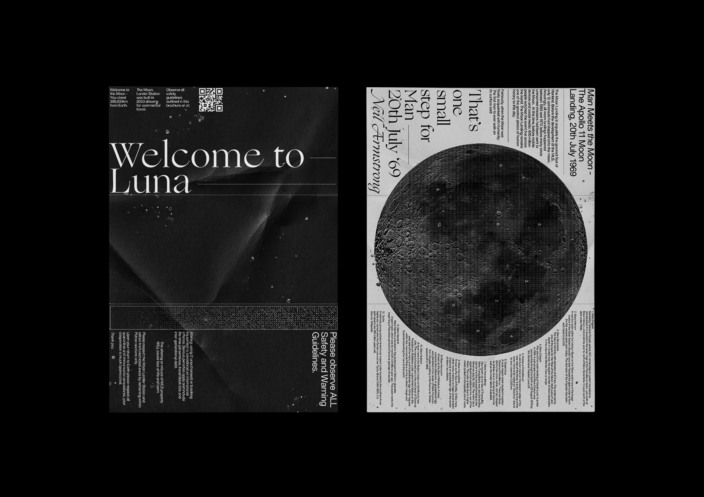
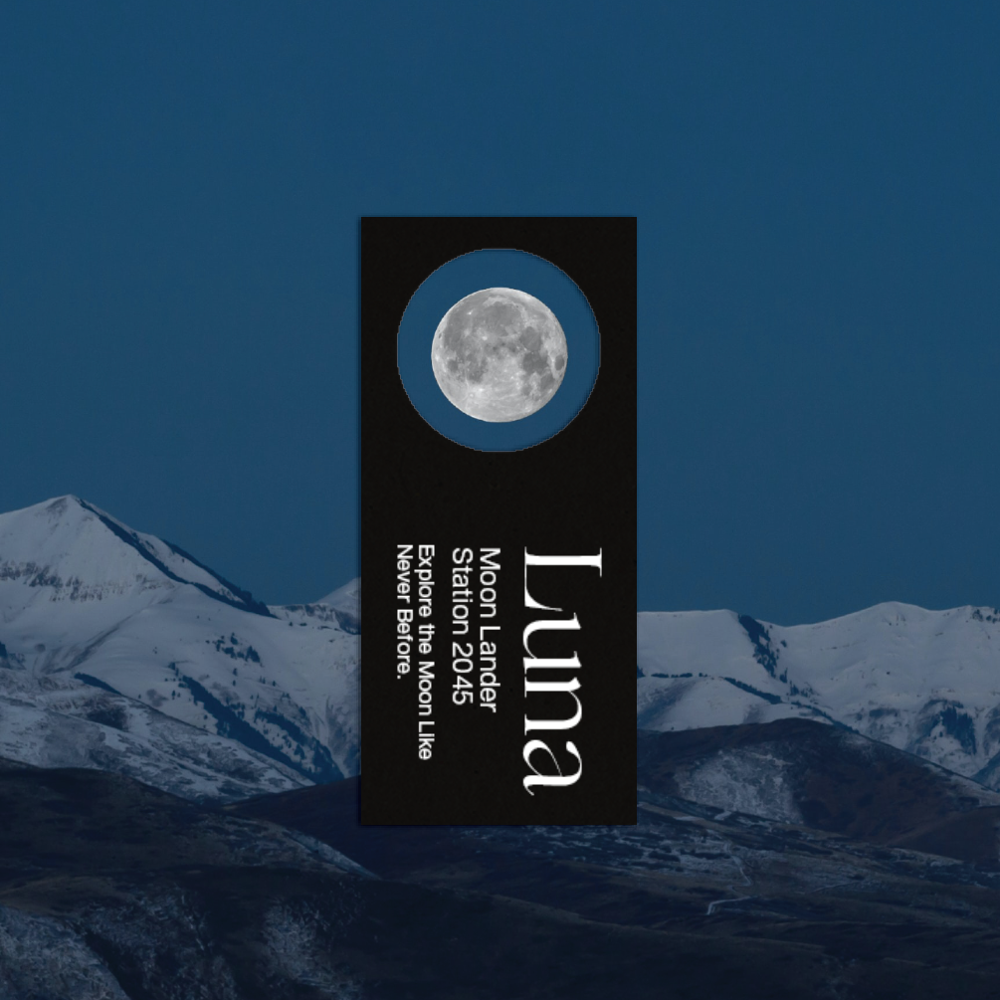

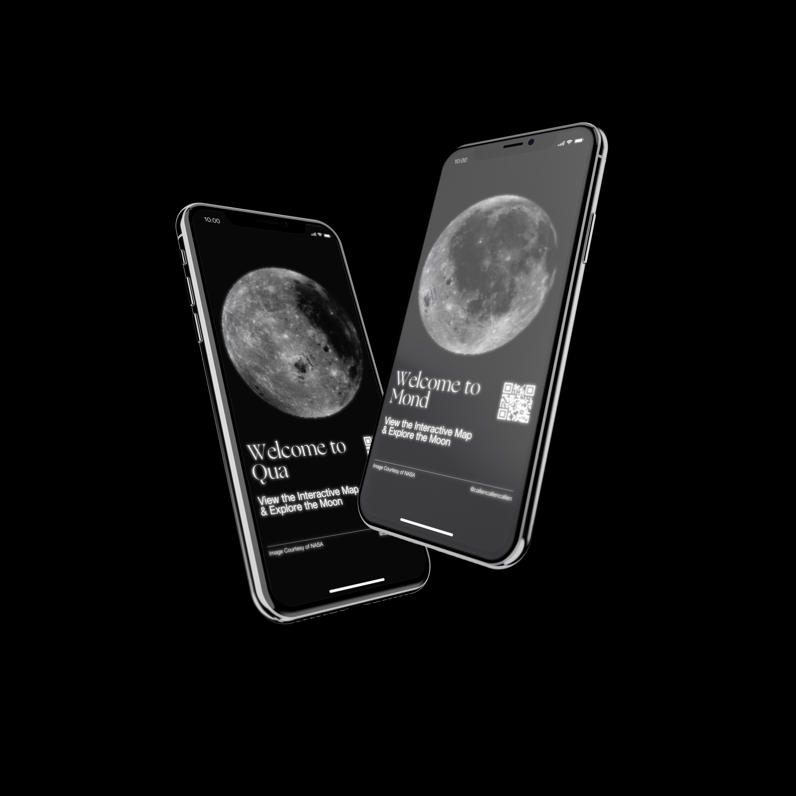
02 Museum of the Disciple
Campaign and Visual Identity
Outcomes: Stationery, Book Cover, Tote Bag and Posters
Year: 2019
Tutor: Janet Mills
Campaign and Visual Identity
MoD (Museum of the Disciple) explores and dives deep into a number of incredibly rare and unique religions from around the globe. Staged at the NGV, this campaign aims to draw people from across Australia to visit an exhibition like none-other.
Full Description
Outcomes: Stationery, Book Cover, Tote Bag and Posters
Year: 2019
Tutor: Janet Mills


03 "Ban the Bomb"
Campaign
Campaign
Nuclear Disarmament concerns the masses of nuclear warheads stockpiled for deployment in 2020. Nuclear War is a pressing and absolutely catastrophic event.
‘Ban the Bomb’ is a revitalised campaign from the 1960s utlilising a modern and brutalist approach to driving awareness to the global issue.
Outcomes: Poster, Publication, Brochure
Year: 2020
Lecturer: Alex Margetic
‘Ban the Bomb’ is a revitalised campaign from the 1960s utlilising a modern and brutalist approach to driving awareness to the global issue.
Full Description
Outcomes: Poster, Publication, Brochure
Year: 2020
Lecturer: Alex Margetic
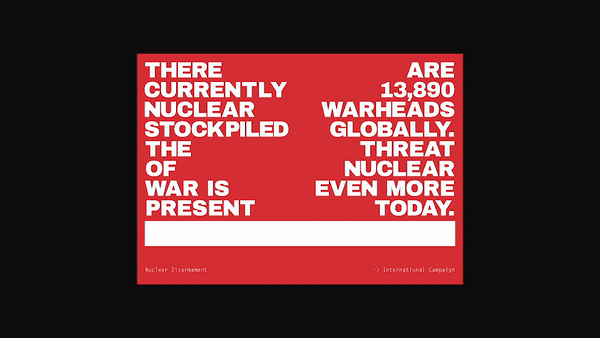
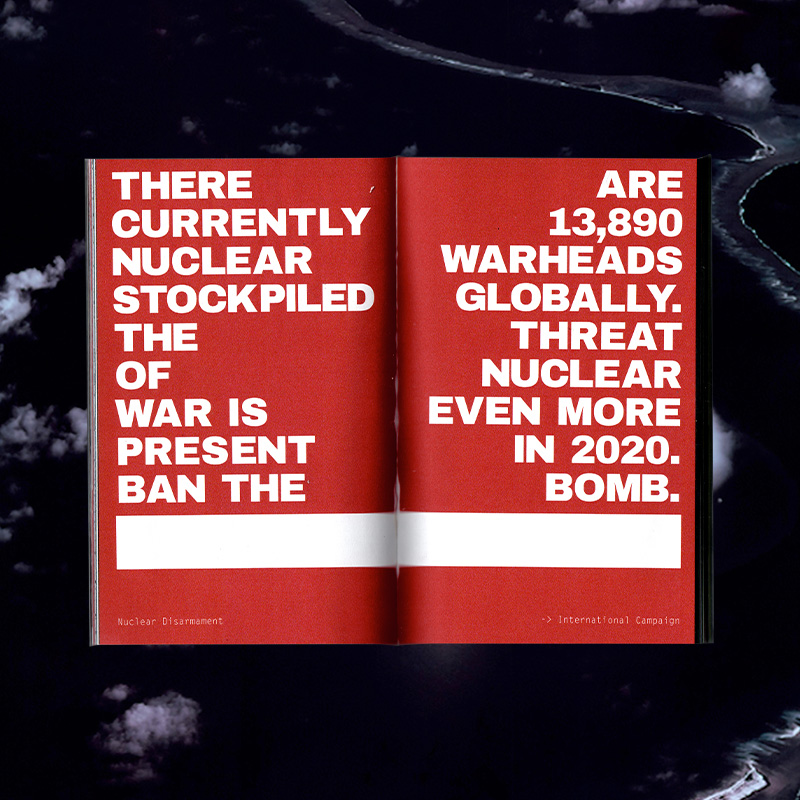
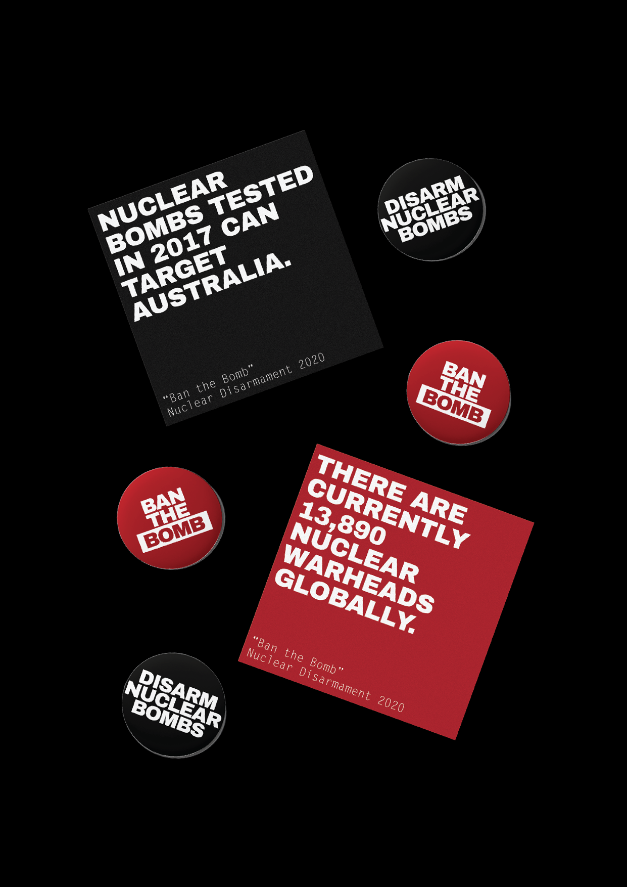
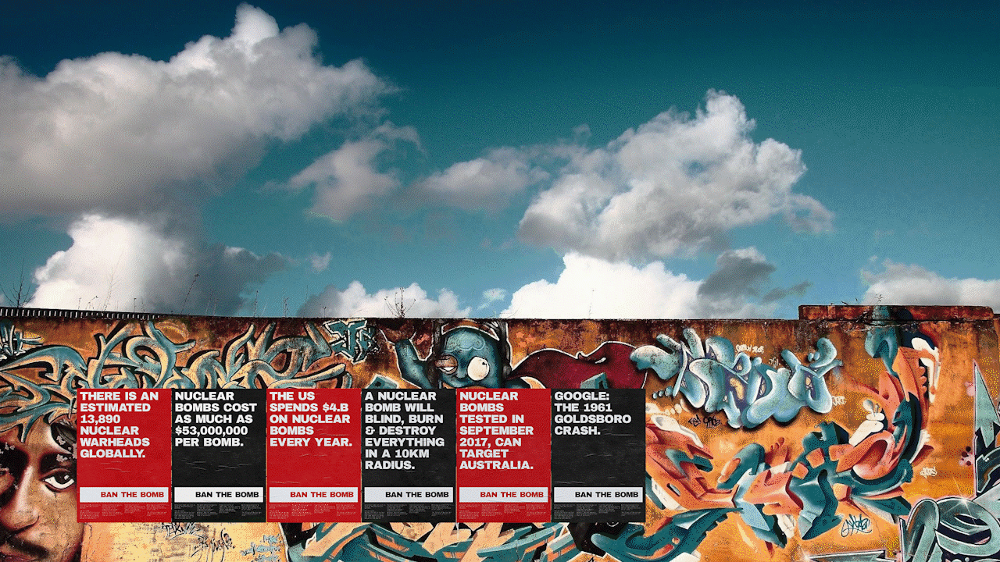
05 Final Hope Medical
Visual Identity
View the Full Digital Outcome here
Outcomes: Motion, Packaging, Illustration, Business Card, Poster
Year: 2020
Lecturer: Cameron Rose
Visual Identity
Within the climate of COVID-19,
we look to a vaccine to leave the COVID Normal State.
‘Final Hope Medical’ is a conceptual pharmaceutical company responsible for distributing vaccines in a pandemic. A bold, brutalist graphic style captures the attention of young adults who may be reluctant to get vaccinated.
‘Final Hope Medical’ is a conceptual pharmaceutical company responsible for distributing vaccines in a pandemic. A bold, brutalist graphic style captures the attention of young adults who may be reluctant to get vaccinated.
View the Full Digital Outcome here
Full Description
Outcomes: Motion, Packaging, Illustration, Business Card, Poster
Year: 2020
Lecturer: Cameron Rose

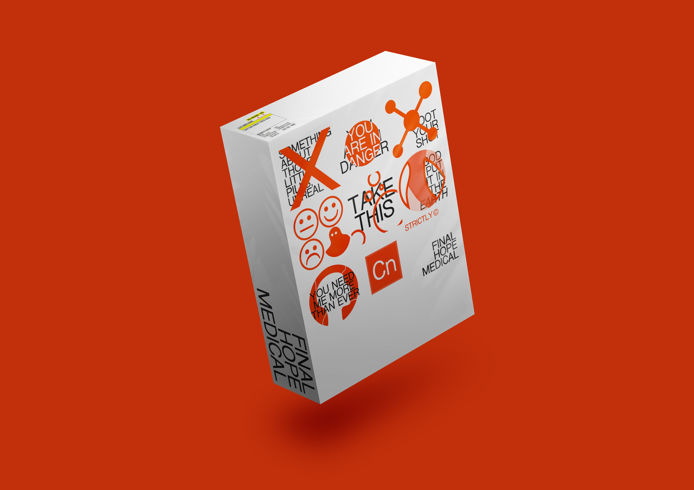
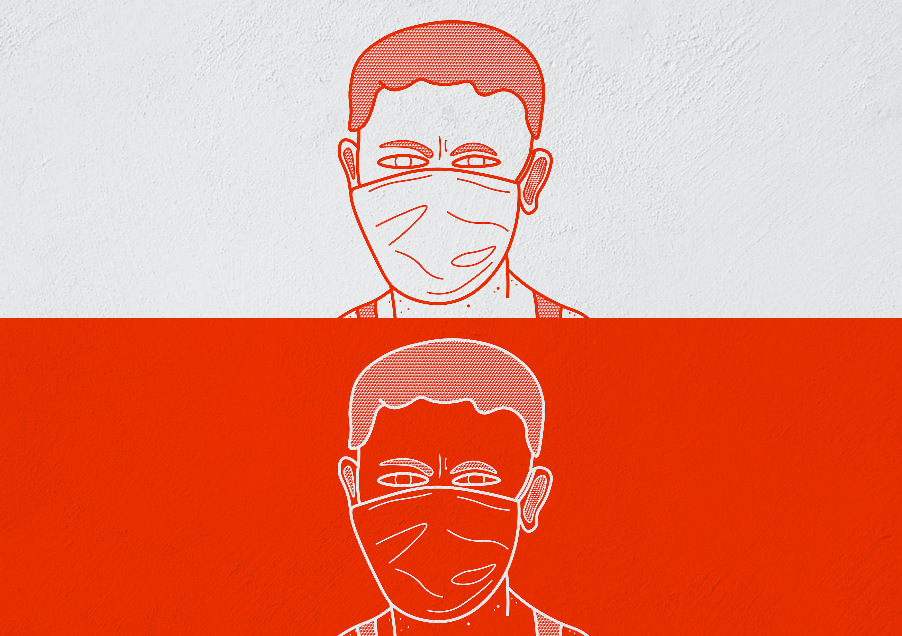
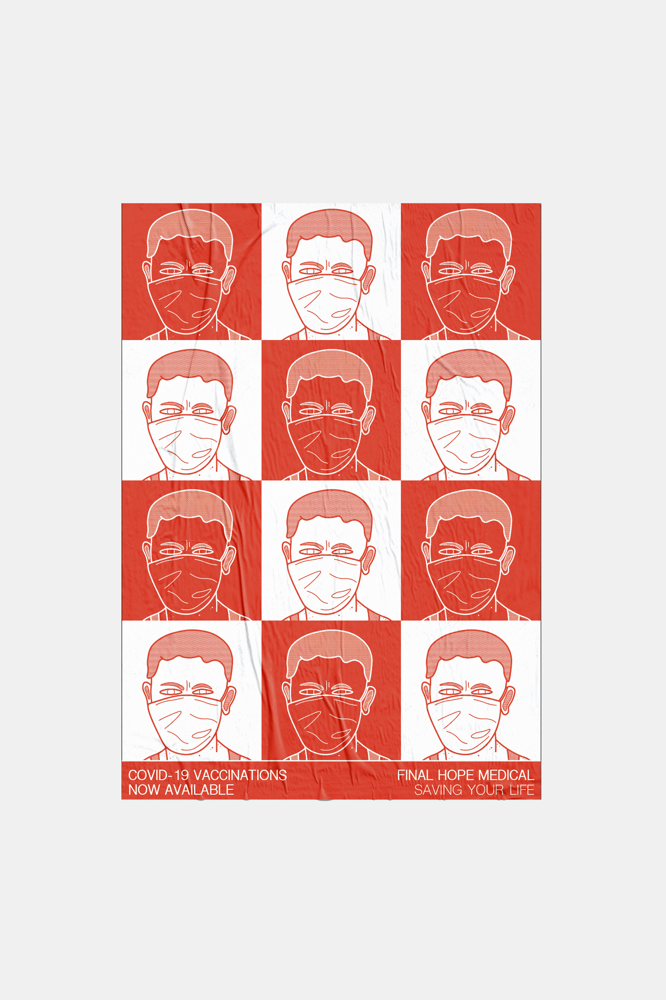

06 RT Edgar Collateral
Publications & Prints
Outcomes: Letterbox Drops, Magazines, Styleguide
Year: 2019
Reference: Louise Siddalls
Publications & Prints
The style in place was one that communicated prestige and luxe, RT Edgar is a brand that has been around for over 120 years and their marketing leverages heavily off their experience and traditional heritage. As such, this placed down quite strict guidelines in regards to font, colour and language.
Full Description
Outcomes: Letterbox Drops, Magazines, Styleguide
Year: 2019
Reference: Louise Siddalls

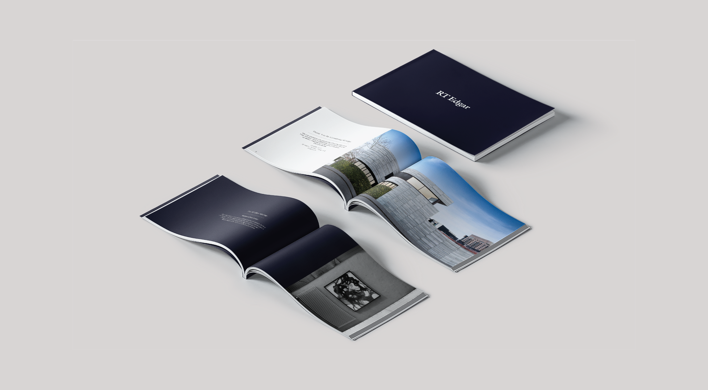
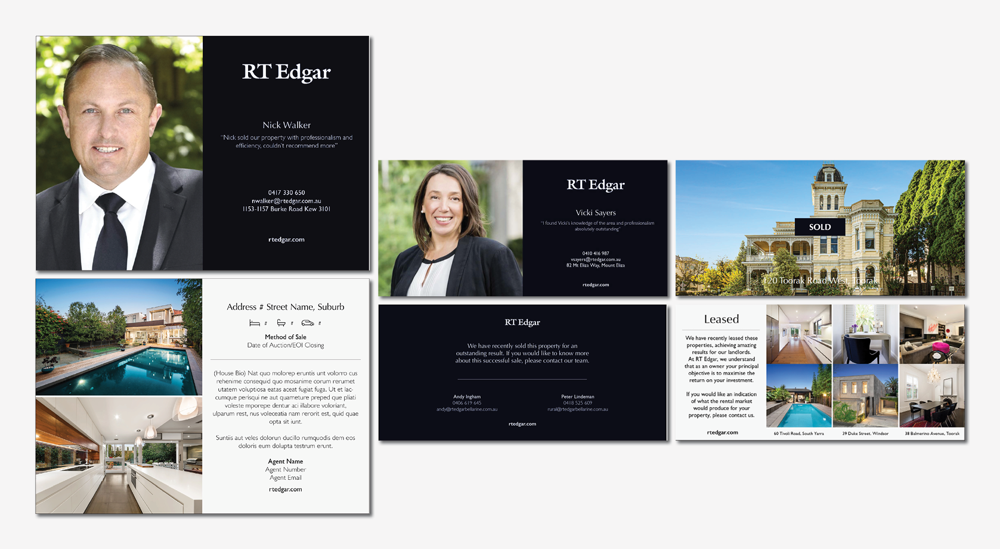